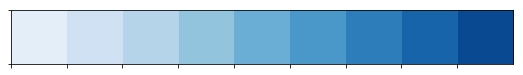
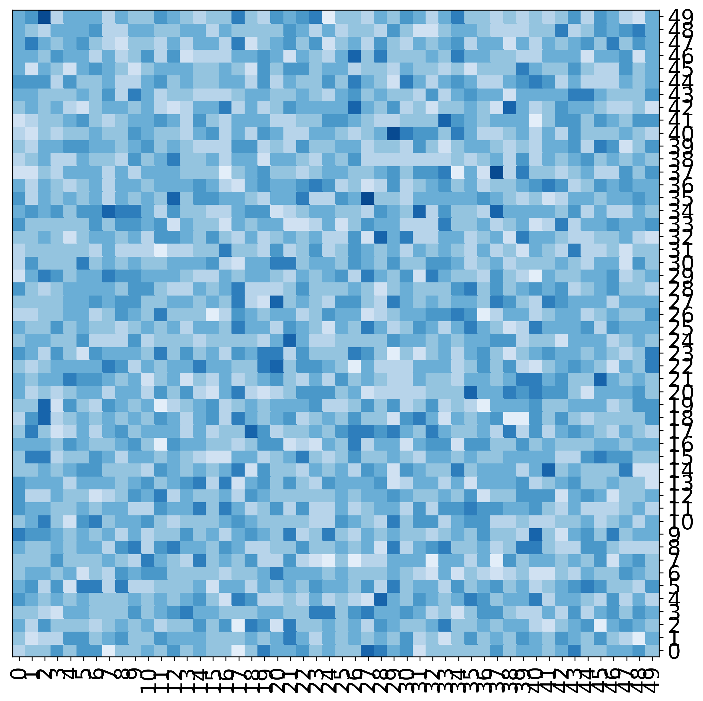
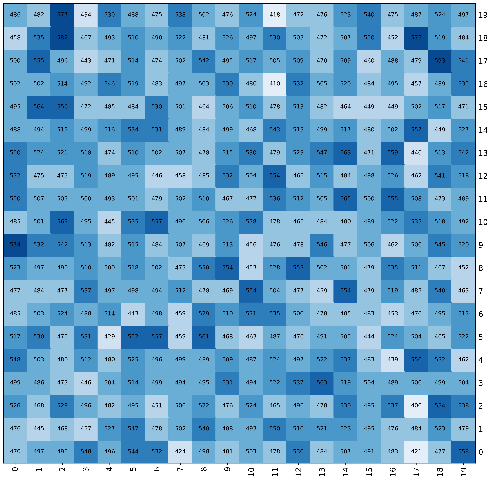
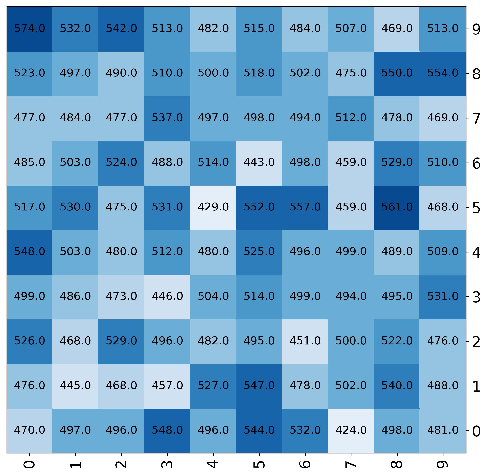
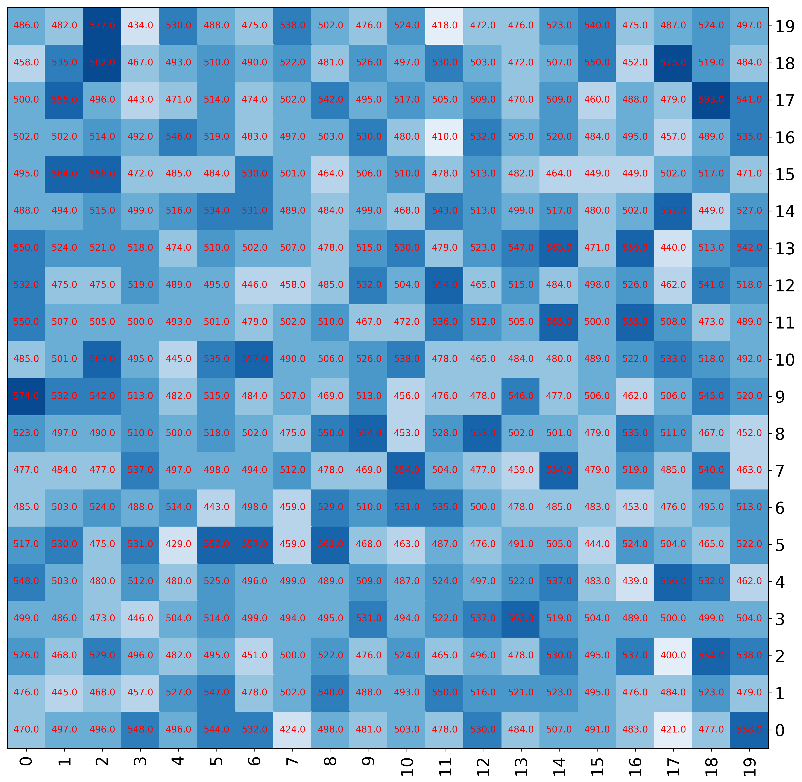
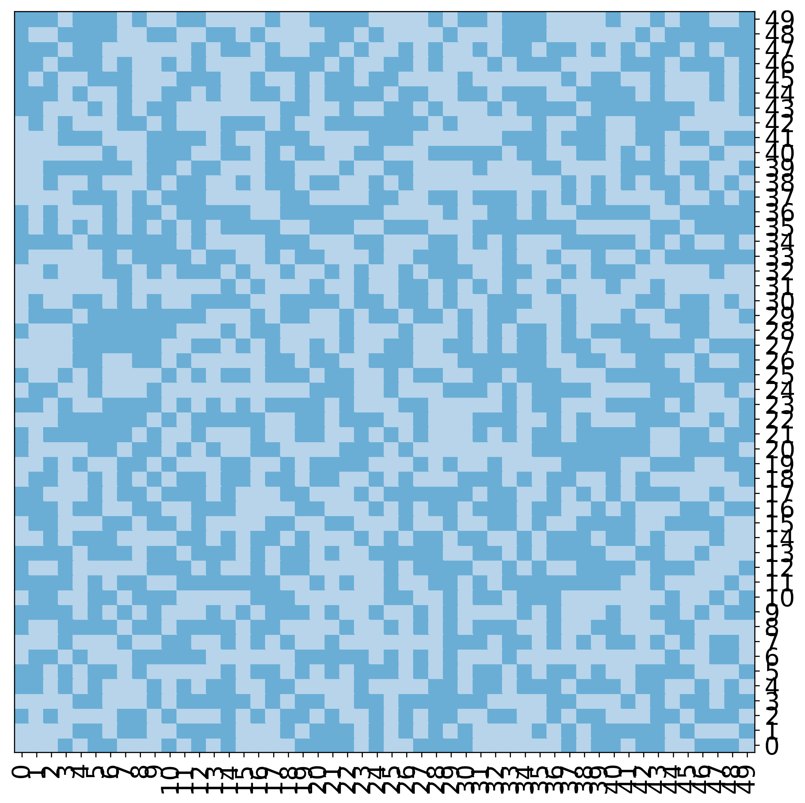
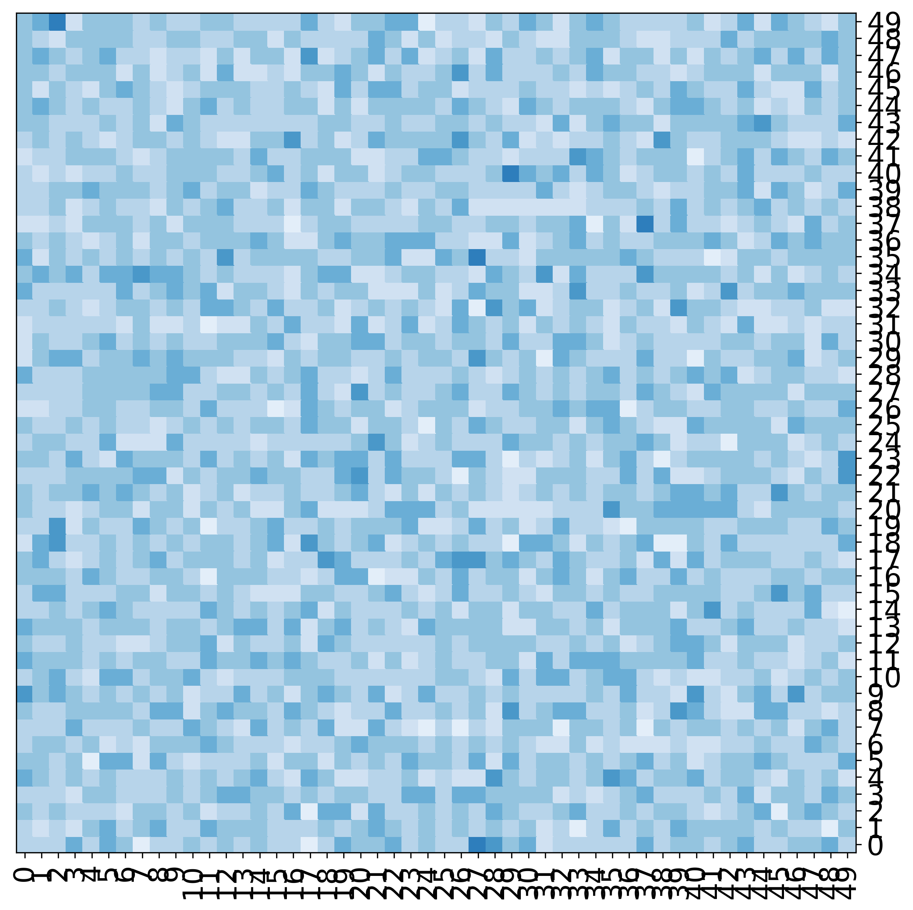
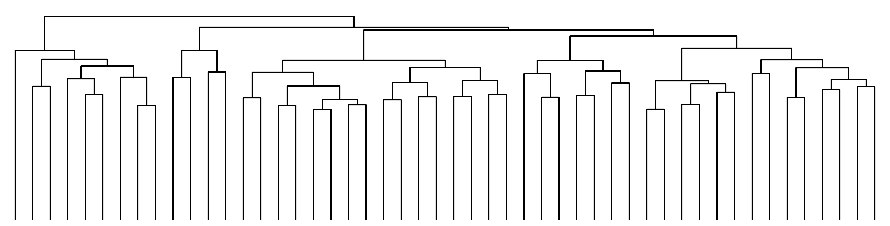
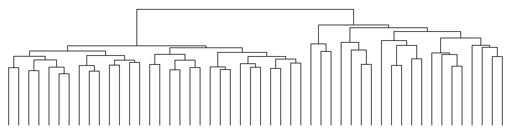
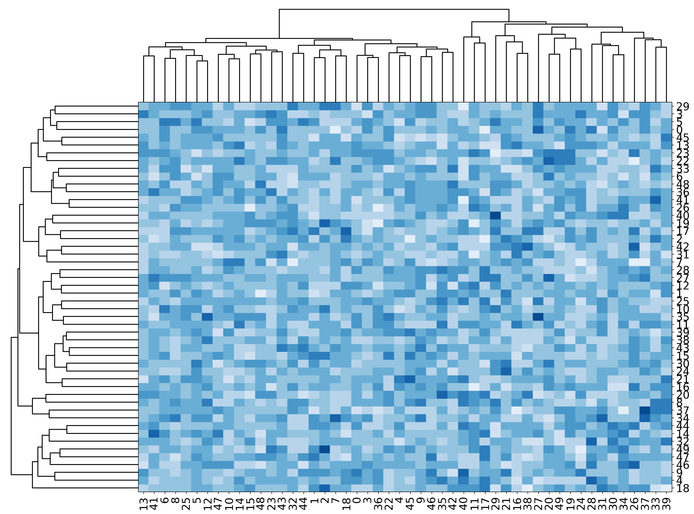

Heatmaps¶
[1]:
import mgkit.plots
import numpy
import pandas
import seaborn as sns
import matplotlib.colors
Random matrix and color map init¶
[2]:
nrow = 50
ncol = nrow
data = pandas.DataFrame(
{
x: numpy.random.negative_binomial(500, 0.5, nrow)
for x in xrange(ncol)
}
)
[3]:
sns.palplot(sns.color_palette('Blues', 9))

[4]:
cmap = matplotlib.colors.ListedColormap(sns.color_palette('Blues', 9))
Basic plot¶
[5]:
fig, ax = mgkit.plots.get_single_figure(figsize=(10,10), aspect='equal')
mgkit.plots.heatmap.baseheatmap(data, ax, cmap=cmap)
[5]:
<matplotlib.collections.QuadMesh at 0x7f83af51e850>

Add numbers to the heatmap¶
Default¶
[6]:
fig, ax = mgkit.plots.get_single_figure(figsize=(20,20))
mgkit.plots.heatmap.baseheatmap(data.iloc[:20, :20], ax, cmap=cmap, annot=True)
[6]:
<matplotlib.collections.QuadMesh at 0x7f83ab9d1110>

Change format of numbers¶
[7]:
fig, ax = mgkit.plots.get_single_figure(figsize=(10,10))
mgkit.plots.heatmap.baseheatmap(
data.iloc[:10, :10],
ax,
cmap=cmap,
annot=True,
annotopts=dict(format=lambda x: "{:.1f}".format(x))
)
[7]:
<matplotlib.collections.QuadMesh at 0x7f83af5636d0>

[8]:
fig, ax = mgkit.plots.get_single_figure(figsize=(15,15))
mgkit.plots.heatmap.baseheatmap(
data.iloc[:20, :20],
ax,
cmap=cmap,
annot=True,
annotopts=dict(
format=lambda x: "%.1f" % x,
fontsize=10,
color='r'
)
)
[8]:
<matplotlib.collections.QuadMesh at 0x7f83ad6f5310>

Using Boundaries for the colors¶
[9]:
norm = matplotlib.colors.BoundaryNorm([0, 300, 500, 700, 900, 1000], cmap.N)
fig, ax = mgkit.plots.get_single_figure(figsize=(10,10), aspect='equal')
mgkit.plots.heatmap.baseheatmap(data, ax, cmap=cmap, norm=norm)
[9]:
<matplotlib.collections.QuadMesh at 0x7f83ad3a6a10>

Normalising the colors¶
[10]:
norm = matplotlib.colors.Normalize(vmin=400, vmax=700, clip=True)
fig, ax = mgkit.plots.get_single_figure(figsize=(10,10), aspect='equal')
mgkit.plots.heatmap.baseheatmap(data, ax, cmap=cmap, norm=norm)
[10]:
<matplotlib.collections.QuadMesh at 0x7f83ad1fe710>

Grouping labels¶
[11]:
fig, ax = mgkit.plots.get_single_figure(figsize=(10,10), aspect='equal')
mgkit.plots.heatmap.baseheatmap(data, ax, cmap=cmap)
mgkit.plots.grouped_spine(
[range(10), range(10, 20), range(20, 30), range(30, 40), range(40, 50)],
['first', 'second', 'third', 'fourth', 'fifth'],
ax
)

Reversing the order of the rows¶
[12]:
fig, ax = mgkit.plots.get_single_figure(figsize=(10,10), aspect='equal')
mgkit.plots.heatmap.baseheatmap(data.loc[data.index[::-1]], ax, cmap=cmap)
mgkit.plots.grouped_spine(
[range(10), range(10, 20), range(20, 30), range(30, 40), range(40, 50)][::-1],
['first', 'second', 'third', 'fourth', 'fifth'][::-1],
ax
)

A dendrogram from clustering the data¶
Clustering rows¶
[13]:
fig, ax = mgkit.plots.get_single_figure(figsize=(20, 5))
_ = mgkit.plots.heatmap.dendrogram(data, ax)
/mnt/c/Users/frubino/Documents/repositories/mgkit/mgkit/plots/heatmap.py:241: ClusterWarning: scipy.cluster: The symmetric non-negative hollow observation matrix looks suspiciously like an uncondensed distance matrix
clusters = hclust.linkage(pairwise_dists, method=method)

Clustering colums (You need the transposed matrix)¶
[14]:
fig, ax = mgkit.plots.get_single_figure(figsize=(20, 5))
_ = mgkit.plots.heatmap.dendrogram(data.T, ax)

A simple clustered heatmap, look at the code for customisation¶
[15]:
mgkit.plots.heatmap.heatmap_clustered(data, figsize=(20, 15), cmap=cmap)
